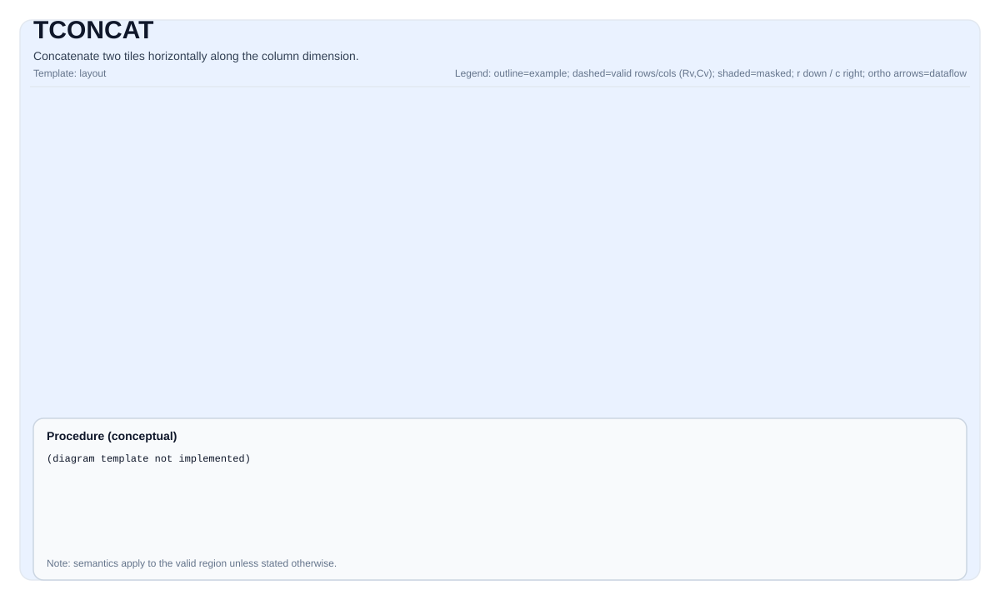
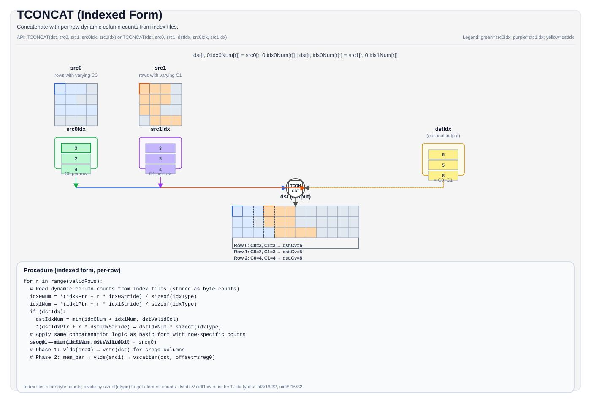

TCONCAT¶
Tile 操作示意图¶
基本形式（3参数）¶

索引形式（5-6参数）¶

简介¶
将两个源 Tile（src0 和 src1）沿列维度水平拼接到目标 Tile（dst）中。dst 的每一行包含来自 src0 和 src1 对应行的拼接结果。
TCONCAT 用于：
- 沿列轴拼接两个 Tile（水平拼接）
- 在 attention 和 transformer 架构中拼接 Tile（例如拼接 KV cache 条目）
- 合并来自拆分操作的局部结果
数学解释¶
对于有效区域中的每一行 i：
\[ \mathrm{dst}_{i, j} = \begin{cases} \mathrm{src0}_{i, j} & \text{若 } 0 \le j < \mathrm{validCols0} \\ \mathrm{src1}_{i, j - \mathrm{validCols0}} & \text{若 } \mathrm{validCols0} \le j < \mathrm{validCols0} + \mathrm{validCols1} \end{cases} \]
其中 validCols0 = src0.GetValidCol() 和 validCols1 = src1.GetValidCol()。
汇编语法¶
PTO-AS 形式：参见 PTO-AS 规范。
AS Level 1 (SSA)¶
%dst = pto.tconcat %src0, %src1 : (!pto.tile<...>, !pto.tile<...>) -> !pto.tile<...>AS Level 2 (DPS)¶
pto.tconcat ins(%src0, %src1 : !pto.tile_buf<...>, !pto.tile_buf<...>) outs(%dst : !pto.tile_buf<...>)C++ 内建函数¶
声明于 include/pto/npu/a5/TConcat.hpp：
template <typename TileDst, typename TileSrc0, typename TileSrc1>
PTO_INST void TCONCAT(TileDst &dst, TileSrc0 &src0, TileSrc1 &src1);
template <typename TileDst, typename TileSrc0, typename TileSrc1, typename TileSrc0Idx, typename TileSrc1Idx>
PTO_INST void TCONCAT(TileDst &dst, TileSrc0 &src0, TileSrc1 &src1, TileSrc0Idx &src0Idx, TileSrc1Idx &src1Idx);
template <typename TileDst, typename TileSrc0, typename TileSrc1, typename TileDstIdx, typename TileSrc0Idx, typename TileSrc1Idx>
PTO_INST void TCONCAT(TileDst &dst, TileSrc0 &src0, TileSrc1 &src1, TileDstIdx &dstIdx, TileSrc0Idx &src0Idx, TileSrc1Idx &src1Idx);约束¶
通用约束 / 检查¶
TCONCAT有三种重载变体：- 基本形式：
TCONCAT(dst, src0, src1)- 拼接完整有效区域 - 索引形式（5参数）：
TCONCAT(dst, src0, src1, src0Idx, src1Idx)- 使用每行索引 Tile 指定动态列数 - 索引形式（6参数）：
TCONCAT(dst, src0, src1, dstIdx, src0Idx, src1Idx)- 同时输出每行的拼接列数
- 基本形式：
- 所有 Tile 必须为
TileType::Vec（向量 Tile） - 所有 Tile 必须使用行主序布局（
isRowMajor == true）
形状约束¶
- 基本形式：
dst.GetValidRow() == src0.GetValidRow() == src1.GetValidRow()dst.GetValidCol() == src0.GetValidCol() + src1.GetValidCol()
- 索引形式：
- 行数约束与基本形式相同
- 列数由索引 Tile 动态确定
- 6参数形式要求
dstIdx.GetValidRow() == 1
数据类型约束¶
- 支持的元素类型：
int8_t、uint8_t、int16_t、uint16_t、int32_t、uint32_t、half、bfloat16_t、float - 源 Tile 和目标 Tile 必须具有相同的元素类型
- 索引 Tile 必须使用整数类型（
int8_t、uint8_t、int16_t、uint16_t、int32_t、uint32_t）
A5 实现检查¶
- 所有 Tile 必须为
TileType::Vec - 所有 Tile 必须为行主序布局
validRows不能超过任何操作数的物理 Tile 行数- 索引 Tile（如果提供）必须满足类型兼容性检查
示例¶
Auto 模式¶
#include <pto/pto-inst.hpp>
using namespace pto;
void example_auto() {
using TileT = Tile<TileType::Vec, float, 16, 32>;
TileT src0(16, 16);
TileT src1(16, 16);
TileT dst(16, 32);
TCONCAT(dst, src0, src1);
}Manual 模式¶
#include <pto/pto-inst.hpp>
using namespace pto;
void example_manual() {
using TileT = Tile<TileType::Vec, half, 16, 64, BLayout::RowMajor, 16, 64>;
TileT src0, src1, dst;
TASSIGN(src0, 0x1000);
TASSIGN(src1, 0x2000);
TASSIGN(dst, 0x3000);
src0.SetValidRegion(16, 32);
src1.SetValidRegion(16, 32);
TCONCAT(dst, src0, src1);
}索引形式示例¶
#include <pto/pto-inst.hpp>
using namespace pto;
void example_indexed() {
using TileT = Tile<TileType::Vec, float, 16, 64>;
using IdxTileT = Tile<TileType::Vec, int32_t, 16, 1>;
TileT src0(16, 32);
TileT src1(16, 32);
TileT dst(16, 64);
IdxTileT src0Idx, src1Idx;
TCONCAT(dst, src0, src1, src0Idx, src1Idx);
}ASM 形式示例¶
Auto 模式¶
# Auto 模式：编译器/运行时管理放置和调度。
%dst = pto.tconcat %src0, %src1 : (!pto.tile<16x32xf32>, !pto.tile<16x32xf32>) -> !pto.tile<16x64xf32>Manual 模式¶
# Manual 模式：在发出指令之前必须显式绑定资源。
# Tile 操作数的可选绑定：
# pto.tassign %src0, @tile(0x1000)
# pto.tassign %src1, @tile(0x2000)
# pto.tassign %dst, @tile(0x3000)
%dst = pto.tconcat %src0, %src1 : (!pto.tile<...>, !pto.tile<...>) -> !pto.tile<...>